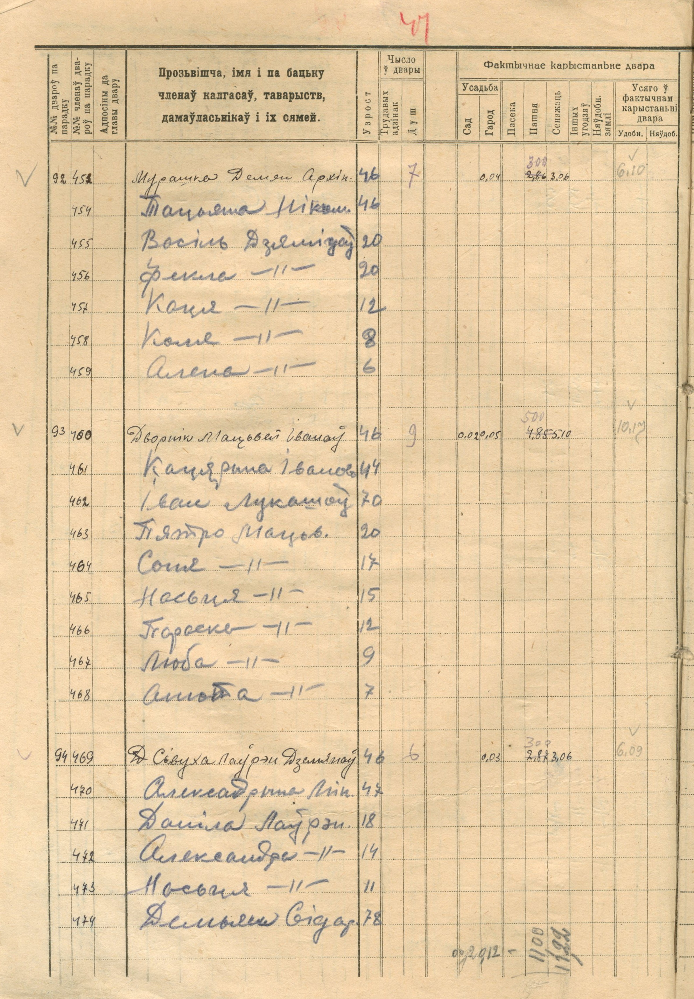
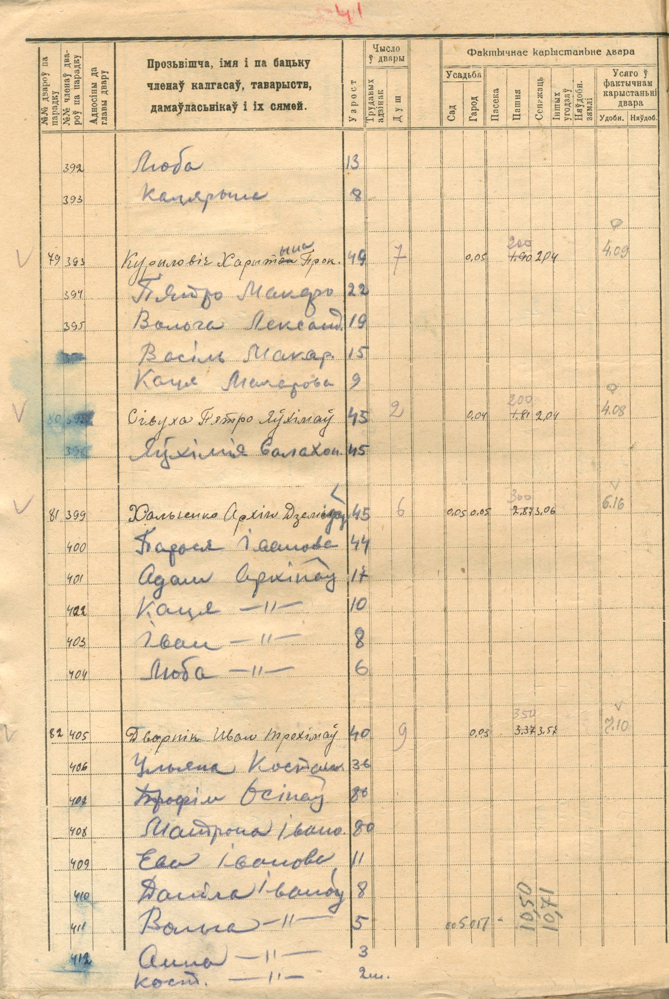
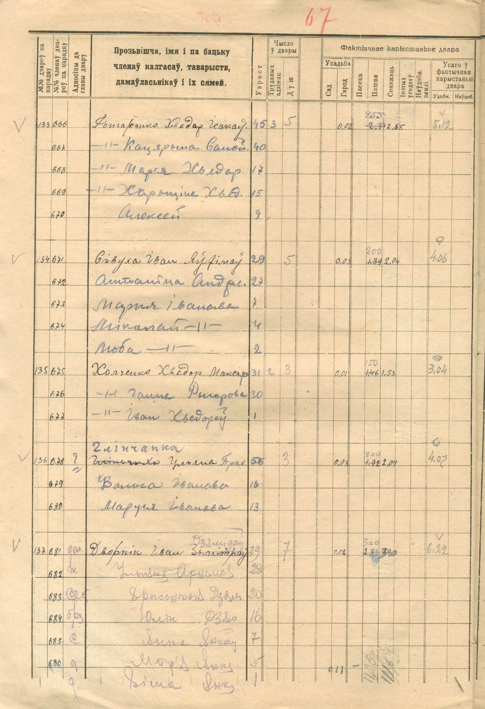
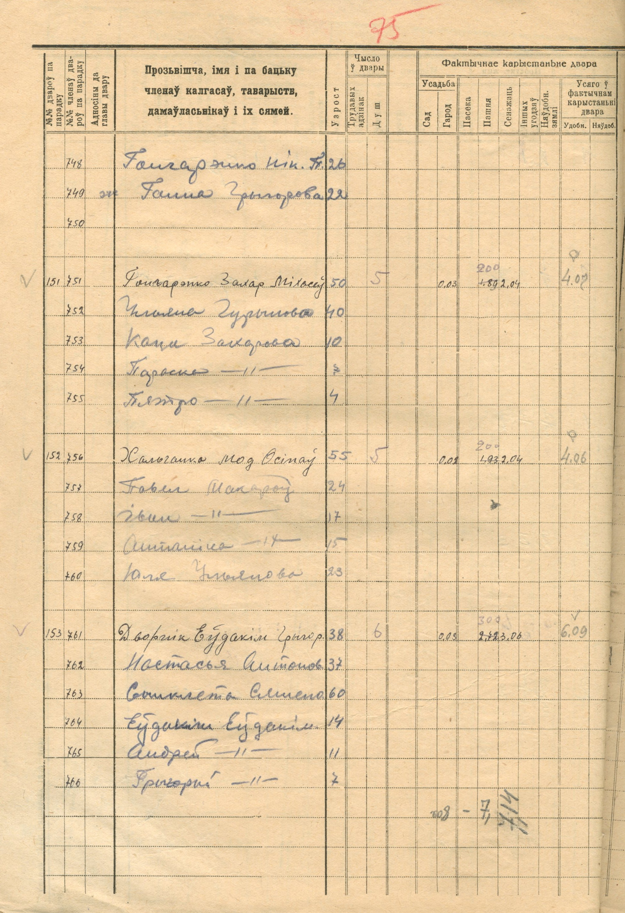

Речицкий район · 1930 год
Подворный список показывает жителей каждого двора и их возраст. На этой странице собран проверенный указатель фамилий деревни и полностью прочитаны дворы Дворников № 93, Хольченко № 81, Холченко № 135 и Хальчанко № 152.
Навигация по первоисточнику
Номера относятся к листам со списками семей. Один лист может содержать несколько дворов; повтор фамилии на разных листах означает отдельное появление в реестре, но не доказывает родство между дворами.
| Фамилия в указателе | Листы | Примечание |
|---|---|---|
| Дворник | 27 об., 31 об., 32 об., 35 об., 37 об., 39 об., 40 об., 42 об., 44 об. - 49 об., 54 об. - 60 об., 63 об. | На л. 49 об. находится двор № 93. |
| Мурашка / Мурашко | 26 об., 29 об., 30 об., 37 об., 41 об., 42 об., 49 об., 50 об., 56 об. | В источнике встречается форма «Мурашка». |
| Сивуха | 27 об. - 32 об., 34 об., 36 об. - 41 об., 43 об. - 46 об., 48 об. - 54 об., 56 об., 57 об., 59 об., 61 об., 62 об., 64 об. - 67 об. | В белорусской орфографии документа - «Сівуха». |
| Хольченко / Холченко / Хальчанко | 46 об., 59 об., 63 об. | В документе фамилия записана по-разному: «Хольченко» на л. 46 об., «Холченко» на л. 59 об. и «Хальчанко» на л. 63 об. |
| Матяшенко | 27, 29 об., 39 об., 45 об., 47 об., 55 об., 56 об. | Фамилия требует полистной проверки вариантов написания. |
| Черношей | 29 об., 36 об., 43 об., 51 об., 66 об. | Подтверждено визуальным указателем. |
| Гончаренко | 28 об., 37 об., 62 об., 63 об. | В рукописи возможны белорусские варианты формы. |
| Кутень | 26 об., 33 об., 60 об. | Подтверждено визуальным указателем. |
| Чечет | 33 об., 34 об., 53 об., 58 об. | Подтверждено визуальным указателем. |
| Бейзер | 32 об. | Подтверждено визуальным указателем. |
| Шаговик | 33 об. | В источнике - «Шагавік». |
| Смольский | 34 об. | Подтверждено визуальным указателем. |
| Горбач | 38 об. | Двор № 49. |
| Ворона | 38 об. | Двор № 50. |
Лист 49 оборот · двор № 93
Имена ниже переданы в нормализованной русской форме; написание источника приведено в отдельной графе.
| Член двора | Возраст | Написание в документе |
|---|---|---|
| Матвей Иванович Дворник | 46 лет | «Дворнік Мацьвей Іваноў» |
| Екатерина Ивановна | 44 года | «Кацярына Іванава»; девичья фамилия не указана |
| Иван Лукашов | 70 лет | «Іван Лукашоў»; родство с главой двора в этой записи не обозначено |
| Петр Матвеевич | 20 лет | «Пятро Мацьвеев» |
| Соня | 17 лет | Отчество заменено знаком повтора |
| Настя | 15 лет | Отчество заменено знаком повтора |
| Фросина | 12 лет | Отчество заменено знаком повтора |
| Люба | 9 лет | Отчество заменено знаком повтора |
| Анна | 7 лет | Отчество заменено знаком повтора |
Возраст в списке не заменяет метрическую запись о рождении: расчетный год рождения зависит от даты составления и может отличаться на один год. Иван Лукашов перечислен внутри двора, но источник не дает основания автоматически считать его отцом Матвея.
Листы 46 об., 59 об. и 63 об.
Три написания фамилии переданы ровно по соответствующим листам. Имена нормализованы по-русски; форма источника приведена в отдельной графе.
| Член двора | Возраст | Написание в документе |
|---|---|---|
| Архип Демидович Хольченко | 45 лет | «Хольченко Архіп Дзямідаў» |
| Дарья Павловна | 44 года | «Дар'я Паўлова» |
| Адам Архипович | 17 лет | «Адам Архіпаў» |
| Катя | 10 лет | «Каця»; отчество заменено знаком повтора |
| Иван | 8 лет | «Іван»; отчество заменено знаком повтора |
| Люба | 6 лет | «Люба»; отчество заменено знаком повтора |
| Член двора | Возраст | Написание в документе |
|---|---|---|
| Федор Макарович Холченко | 31 год | «Холченко Хведор Макаров» |
| Анна Федоровна | 30 лет | «Ганна Федорова» |
| Иван Федорович | 1 год | «Іван Хведоров» |
| Член двора | Возраст | Написание в документе |
|---|---|---|
| Модест Осипович Хальчанко | 55 лет | «Хальчанко Мод. Осіпаў»; имя в источнике сокращено |
| Гавриил Макарович | 24 года | «Гавіл Макаров» |
| Иван Макарович | 17 лет | «Іван»; отчество заменено знаком повтора |
| Антонина Макаровна | 15 лет | «Антаніна»; отчество заменено знаком повтора |
| Юлия Ульяновна | 23 года | «Юля Ульянова» |
Родственные отношения между перечисленными жителями в этих строках не обозначены, поэтому здесь они не реконструируются.
Архивные изображения




Архивная ссылка
Национальный архив Республики Беларусь. Фонд 48, опись 1, дело 5068: «Подворно-имущественные списки землепользователей Ровенско-Слободского сельсовета Речицкого района», 1930 год. Раздел деревни Ровенская Слобода - листы 26 оборот - 68.
На странице публикуются оборотные листы с составами семей. Следующие лицевые листы с имуществом соответствующих дворов здесь не приводятся.